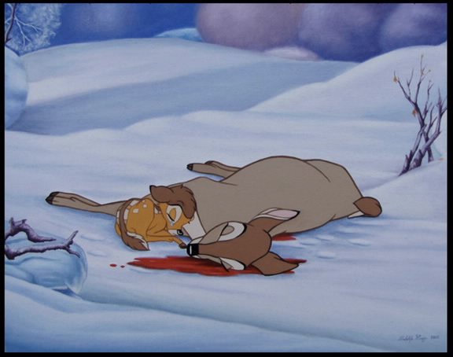
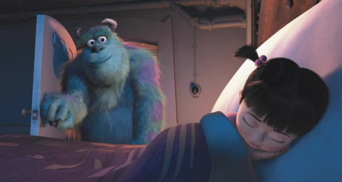
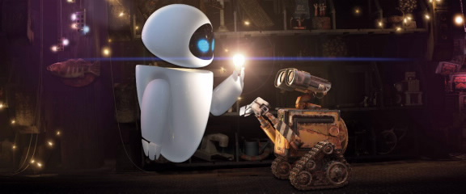
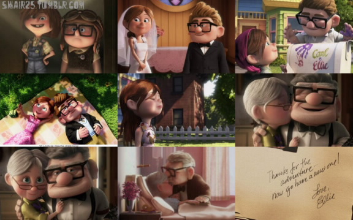
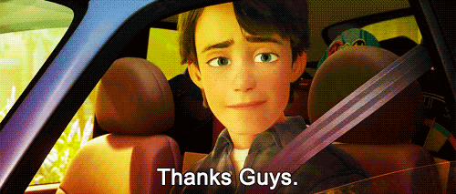
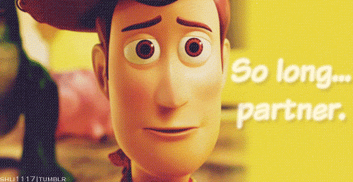

Animation films are known for delivering exceptionally powerful and emotional messages that are often more likable than their live-action counterparts. Animation is an affective storytelling technique that attracts and evokes emotion from children and adults alike. As a result of an increase in production quality, animation studios have the technology to generate imaginative storylines and relatable characters and achieve more effects that enhance emotion as opposed to distract from it thereby giving audiences a beautiful representation of the universe.
Tailored to evoke profound and unforgettable emotional moments, animated movies appeal to our child-like innocence and induce nostalgic memories of our childhood. With a plethora of emotional moments to choose from, we have compiled a list of what we believe are the top five emotional and tear-jerking moments in animation history.
10. Death of Bambi’s Mother in Bambi (1942)

Bambi, a childhood favorite, sets a positive and hopeful scene as Bambi and his mother rejoice in finding food amidst the snow-ridden forest. This feeling of hope and happiness is quickly overcome by fear and danger as Bambi’s mother advises him to run fast and not look back. As Bambi and his mother try to escape from the hands of the menacing hunters, an ominous gunshot is heard. After reaching safety, Bambi, excited to share his relief with his mother, turns around to realize her absence. His frantic search and oblivion of his mother’s tragic fate illustrates an incredibly heartbreaking moment. He cries and fears he has lost her forever. Once he registers the news of his mother’s passing, he turns his head back one last time to see if she is there.
9. Tod gets Left Behind in The Fox and the Hound (1981)
{kind=link}
The beginning sequence of The Fox and the Hound features an unbreakable bond between an orphaned baby fox, Tod, and a lonely widowed woman, Tweed. Soon after Tweed adopts and cares for Tod, Tweed’s neighbor threatens her for housing the fox and therefore has no choice but to return him to the wild despite the pain it would cause. The solemn drive to the woods illustrates Tweed’s beautiful yet heartbreaking narration, voicing one of the saddest dialogues in cinematic history.
We met it seems such a short time ago, you looked at me needing me so
Yet through your sadness our happiness grow, and then I thought
I need you too. I remember how we used to play, I recall those rainy days
The fire was glowing and kept us warm and now I find we’re both alone
Goodbye may seem forever, but in my heart’s the memory
And there you’ll always be
The heavyhearted goodbye leaves Tweed crying and Tod confused. Unaware of her motives, Tod tries to follow her back to her car, where she finally confronts him and motions to him to let her go. She gives him one final teary glance and drives away as the fox realizes he has yet again lost someone he cares about deeply. His innocence, his need for companionship, and his love for Tweed indisputably makes this one of the hardest goodbyes to witness.
8. Littlefoot’s Mother Dies in The Land Before Time (1988)
{kind=link}
Much like Bambi, The Land Before Time illustrates a distressing scene between a loving mother and hopeful son. After getting attacked by dangerous dinosaur, Sharptooth, and braving a destructive earthquake, Littlefoot’s mother, Mama Longneck is left lying on the ground, weak and frail. Finding his mother lying on the ground alive, Littlefoot tries to convince her to get up and journey with him to the Great Valley. Acknowledging her imminent death, Mama Longneck tells her son that she will be with him forever and to let his heart guide him. Her love, care, and memorable advice marked one of the most gut wrenching moments in animation film.
The heartbreak is prolonged as the movie follows a sequence of events that highlights Littlefoot’s grief and guilt throughout his journey back to the Great Valley. One of the more tear-jerking scenes is when Littlefoot stumbles upon his mother’s old footprint and snuggles up to it, crying. He is further reminded of his mother when she appears in a tree star providing him the confidence to find his way back to Great Valley. The sequence ends with Littlefoot running towards what he perceives to be a large shadow of his mother, hopeful that she is still alive, only to find out that it is his own shadow and that she is gone forever.
7. Mufasa’s Death in The Lion King (1994)
{kind=link}
An unforgettable moment in animation film, Mufasa’s death was for many children their first experience with grief and loss. When young Simba finds himself in the middle of a stampede, hanging on a branch with no escape, his father, Mufasa, comes to the rescue, saving and protecting his son from this danger only to get swept up by the stampede himself. Momentarily escaping the chaos, Mufasa begs his brother, Scar, to pull him up and save him. A jealous and evil Scar pushes Mufasa off the cliff and lets him fall into the stampede, maliciously whispering “Long Live the King.”
Simba, a bystander of the horrific murder, begins to frantically look for his father, hopeful that he may still be alive. When Simba finds his father motionless on the ground, he begs him to wake up and yells for help only to realize that he had lost his father forever. The audiences sympathize with Simba when he finds comfort under Mufasa’s arm and starts to cry, feeling guilty and alone.
6. Quasimodo is Pelted and Abused at the Festival of Fools in The Hunchback of Notre Dame (1996)
{kind=link}
The Hunchback of Notre Dame follows one of the most tortured characters in Disney animation. Quasimodo’s life leading up to the festival is tragic and lonely. Evil villain, Frollo, kills Quasimodo’s mother and is forced to raise the deformed child in Notre Dame. Torturing Quasimodo to the point where he cowers and shuts down, Frollo is arguably one of the most malicious characters in Disney history.
An isolated young man hidden inside the cathedral his whole life, Quasimodo is encouraged to attend the annually held Festival of Fools, despite Frollo’s advisories that he would be shunned for his deformity. At the festival, Quasimodo is initially celebrated for his bizarre appearance, but then is humiliated by the crowd after Frollo’s men start a riot. The worst moment comes when Quasimodo is tied down and has food thrown at him while he cries out for Frollo to help him, a person he considers to be his ‘guardian’. Frollo refuses to help and, instead, watches Quasimodo grow helpless, scared, and desperate.
Luckily for us, Esmeralda, a kind gypsy, intervenes by freeing the hunchback and using magic to evade arrest. Unfortunately, however, Frollo continues to abuse and scold him, sending him back inside the cathedral. As the whole town views him as a monster, audiences cannot help but sympathize with the innocent and kind-hearted, Quasimodo.
Nowadays, animation produces motion, brilliance, and malleability that achieves magical designs and creates fantasy-based yet complex storylines. By maximizing creativity in illustration, producers and animators have the power to adapt a story to induce high levels of emotional attachment. Animation grants flexibility and exaggeration thereby resulting in an astounding number of reactions, behaviors, and atmospheres that are completely specific to animated works and provide an edge over live-action works.
Tailored to evoke profound and unforgettable emotional moments, recent animation films have induced nostalgic memories and produced some of the most emotive and poignant scenes in cinematic history. We have compiled a list of the top five emotional and tear-jerking moments in recent animation history.
5. Jessie’s Flashback in Toy Story 2 (1999)
{kind=link}
{kind=link}
{kind=link}
There are few sequences in all cinematic history that are as guaranteed to leave even the most hard-hearted of viewers with a lump in the throat as the three minute montage detailing Jessie’s tragic past in Toy Story 2.
Jessie, the energetic cowgirl, reveals the details of her background to Woody, the heroic cowboy, in the context of a dialogue-free flashback that is nothing short of heartbreaking. The flashback reveals Jessie’s deep love and bond for her owner, Emily. An inseparable duo, Emily became Jessie’s entire world and meant everything to her. Unfortunately as Emily grows up, she slowly forgets and abandons Jessie under the bed. The cowgirl, hopeful that Emily will rekindle their close friendship, is eventually given away for donation and put into storage. A devastated Jessie promises to never love or connect with another child again.
Much like Jessie’s flashback, Lots-O’-Huggin’ Bear, from Toy Story 3, deserves a mention as he gets accidentally left behind by his owner’s family only to find that he had been replaced, his value depleted to nothing more than a substitutable object.
4. Telling Boo Goodnight in Monsters Inc. (2001)

A story about a parallel city inhabited by monsters and powered by the screams of children in the human world, Monsters Inc. turns into a telling account of a deep bond between a little girl, named Boo, and monster, Sulley.
After Sulley finds Boo illegally roaming around in the parallel city and later getting chased by multiple parties, the end of the movie shows monsters Sulley and Mike finally returning Boo to her room. Knowing that this will be the last time Sulley sees Boo, he tucks her into bed, lies about coming back to see her again, and says a heartfelt goodbye. As Sulley closes her closet door and enters his world, young and oblivious Boo runs after him and opens her closet door to find nothing but emptiness. When villain, Roz, shreds Boo’s door, we feel the sadness of a friendship lost. We are happy, though, when good friend Mike fixes the door that allows Sulley to visit Boo.
3. Wall-E forgets Eve in WALL-E (2008)

It is not a stretch to call WALL-E one of the most vividly realized and downright memorable characters ever to be created by Pixar Animation Studios. WALL-E follows the story of the only surviving trash compacting robot on planet earth, whose realization of sentience, loneliness, and curiosity evokes many emotions from its audiences. The arrival of EVE, an advanced robot sent to Earth on a scanning mission, teaches him about interacting with others and experiencing friendship, companionship, and romance for the first time.
When EVE shuts down and goes into standby mode while waiting for her ship to retrieve her, WALL-E, confused by her unresponsiveness tries to reactivate her to no avail. A need to protect and guard EVE, WALL-E clings to the ships hull and travels through space to the Axiom. After the on-board security system designates both WALL-E and EVE as rogue robots, the system stages a mutiny and severely damages and crushes WALL-E, leaving him unresponsive. EVE, who just learned to love WALL-E, saves him and brings him back to earth to repair him. As soon as she reactivates him, he reverts to his original programming, becoming an emotionless waste compactor that no longer recognizes EVE. Thankfully EVE’s farewell kiss gives jolts WALL-E’s memory and restores his personality.
2. Carl and Ellie’s Life Together in Up (2009)

Up features an absolutely devastating four-minute montage detailing the highs and lows of hero Carl Fredrickson’s life with his beloved soul mate, Ellie. It’s an incredibly stirring and touching stretch that effectively sets the movie’s plot into motion and there is little doubt that the strength of Carl’s love for his late wife triggers a few other palpable instances of emotion later on in the movie.
We watch Carl and Ellie share a love for adventure as children and watch them grow together, Ellie leading and guiding Carl and becoming everything he wants in life. We watch her keep him grounded and bring him happiness and purpose. The montage goes on to detail the heartbreak associated with Ellie’s sadness over her inability to bare children, the emotional distraught from the news overshadowing Ellie’s life and mental state. We watch as Carl attempts to uplift her spirit by promising to build her their dream house overlooking Paradise City in South America. Finally, we watch Carl lose her to illness and eventual death, making him the grouchy hermit we encounter at the beginning of the film.
1. The End: Incinerator and Andy’s Departure in Toy Story 3 (2010)

The ending of Toy Story 3 showcases several astonishingly adult moments and realizations, which cements its place as one of the most viscerally moving sequences within the trilogy. The sequences leading up to the ending depict a shocking and emotionally draining moment in which Woody, Buzz, and the rest of the gang find themselves trapped in a huge incinerator with no escape. Rather than waste their moments trying to find a way out, Andy’s toys accept their respective fates and spend their last few moments comforting one another and grabbing hands. As the toys we have grown to love and care for gather hands, accepting the inevitable as a community of friends, we can’t help but have a dropping feeling in our gut.
Andy’s touching departure from his toys before going off to college marks the end of an era of childhood. A young man who no longer has a need for his toys, Andy has to depart from his childhood and give another child the joy his toys gave him. The drive to Bonnie’s, the slow departure with each toy, and Woody sitting and watching Andy as he drives away reminds us of every emotional departure we ever had growing up.
{kind=link}
Leave a Comment